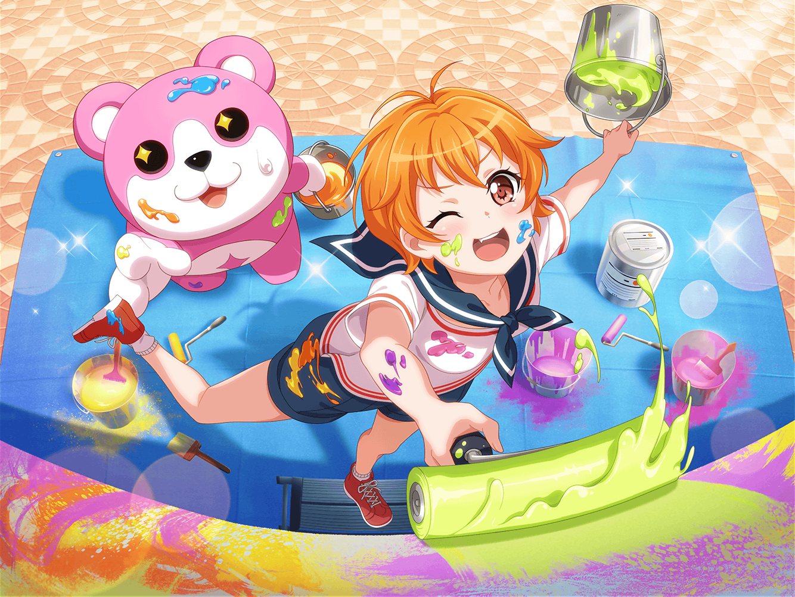

数日後
花咲川スマイル遊園地
こころ
今日のチラシ配りもとーっても楽しかったわね！
こころ
今度は遊園地ピカピカ作戦をがんばるわよ！
みんな、ペンキは持った？

はぐみ
準備オッケーだよ！ ミッシェル、こっちこっち！
この壁に絵を描こっ！
ミッシェル
あー、例の壁画のとこか……
えーと、何を描けばいいの？
はぐみ
ミッシェルが笑顔になれるものだったら
なんでもいいんだよ！
ミッシェル
ミッシェルが笑顔になれるもの……？
じゃあ、ハチミツとか描けばいいのかな？
花音
ふふ、じゃあ私はクラゲを描こうかな
ミッシェル
あ、花音さん……
花音
今日もミッシェルは大人気だったね。
握手したり、一緒に写真撮ったりして
ミッシェル
いや、大したことはしてないですけど……
ミッシェル
気づいたら、ミッシェルファンに囲まれてて
対応に追われてただけですし
こころ
そこにいるだけで
みんなを笑顔にしちゃうなんてさすがミッシェルね！
はぐみ
ミッシェルはふかふかでもふもふだもん！
そばにいるだけで元気をもらえるよ！
薫
ただそこにいるだけで幸せを振りまいてしまう……
フフ、お互い罪な定めだね
ミッシェル
は、はぁ……
ホント、みんなミッシェルが好きだね……
はぐみ
あ、そういえば、こころん！
新曲のイメージはできた？
こころ
んー、それがまだなの。
曲にしたいことがたくさんあってどれにしようか考えてるのよ
薫
さすが、こころ。イマジネーションが溢れているね。
なに、まだ時間はある。ゆっくり考えてくれればいいさ
薫
その間、私は儚いメロディをたくさん考えておこう。
どんなイメージにも合わせられるようにね
花音
こころちゃん達、街で宣伝してきたあとなのに元気だね
ミッシェル
あの体力を分けてほしいくらいですよ……
花音
ふふ、でも宣伝してる時の美咲ちゃん本当にすごかったね
花音
たくさんの人を笑顔にしてて、私もがんばらなくちゃって思ったよ
ミッシェル
え？ いやいや、花音さんもがんばってるじゃないですか
ミッシェル
あたしなんてホントに何もしてないですよ。
ミッシェルのキャラクターあっての人気ですし
花音
そんなことないと思うけど……
花音
でも、あんまり無理はしないでね。
このところ、少し疲れてるみたいだし
ミッシェル
そ、そうですか？
花音
気のせいならいいんだけど、最近元気ないなって思ってたから
ミッシェル
あー、いえいえ、元気ですって。
ただ最近、ミッシェルの仕事しか
してないなってちょっと考えちゃって
ミッシェル
いつもなら曲作りに追われてたり、
ライブの計画まとめたりして忙しいから……
花音
みんな、美咲ちゃんがしてたことを
手伝えるようになってきたもんね
花音
でも、それっていいことだと思うんだけど……
何か困ることあった？
ミッシェル
あ、いえ、そうですよね……
いいことですもんね……
ミッシェル
あはは、なんでもないんで、気にしないでください
花音
そ、そう？ それならいいんだけど……
ミッシェル
…………
 花咲川スマイル遊園地 スタッフ控え室
花咲川スマイル遊園地 スタッフ控え室
黒服
それではミッシェルを回収しますので、
着替えがすみましたらお声がけください
黒服
我々はこころ様達が入らないよう
部屋の前で待機しておりますので
美咲
あ、はい。どうも。
いつもすみません……
美咲
はあ……
なんであたしこんなにモヤモヤしてるんだろ？
美咲
こころ達が手伝ってくれてるのはいいことのはずじゃん……
美咲
（こころとはぐみははちゃめちゃだけど、
はちゃめちゃさを自分で形にできるようにがんばってるし）
美咲
（薫さんは曲作りに慣れてきてるし……
あたしのすることが減って忙しくなくなったし……）
美咲
でも、あたしのすることがないんだよね……
美咲
（そういえば、こころのイメージを歌詞にするのって、
花音さんもできてたし、このままだと本当に……）
美咲
あたしのすることなくなっちゃいそう……
ミッシェル
…………
美咲
元々目立つのは別に好きじゃないけど、
ミッシェルしかあたしのすることないのもなんかな……
美咲
ミッシェルはいいよね。いるだけで意味があるし。
あんたといるとみんな笑顔になれるんだってさ
ミッシェル
…………
美咲
ねぇ、ミッシェル……
あたしも笑顔にしてくれないかな……？